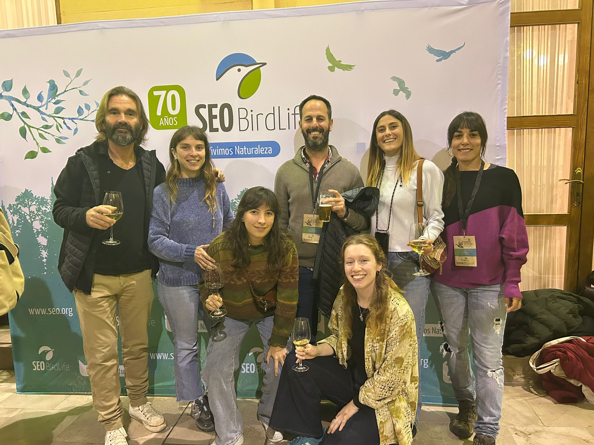

26 Congreso Español de Ornitología
Del 12 al 16 de febrero de 2025, varios miembros del equipo de SEANIMALMOVE asistieron al 26º Congreso Español de Ornitología, celebrado en Valencia. En este evento, participaron Gonzalo Muñoz, Andrés de la Cruz, Laura Rollán y Alba Márquez-Rodríguez, junto con otras colaboradoras como Yana Korneeva Abdulaeva, Nuria Martín y Andrea Forján Miguens.
Durante el congreso, los investigadores de SEANIMALMOVE presentaron tres trabajos:
📢 Comunicación oral
Long-term study of nesting strategy fidelity in the kentish ploved in managed salt pans
Autor principal: Gonzalo Muñoz
Este estudio analizó la fidelidad a la estrategia de nidificación en el chorlitejo patinegro (Charadrius alexandrinus) en salinas de Cádiz. Se examinó si los individuos mantienen la misma estrategia de nidificación a lo largo de diferentes temporadas de cría, evaluando su selección del hábitat (cristalizadores vs. evaporadores) y la asociación con colonias de otras aves.
🖼️ Póster
Global change drivers increase the importance of low-disturbance artificial habitats for sensitive species in beaches and salinas coastal systems
Autor principal: Andrés de la Cruz
Este trabajo exploró cómo el cambio global está llevando a algunas especies, como el charrancito común (Sternula albifrons), a utilizar hábitats artificiales como las salinas en lugar de playas naturales. A través de dispositivos GPS, se compararon los patrones de movimiento y uso del espacio de individuos nidificantes en ambas zonas, destacando el papel de las salinas como refugios clave para la conservación.
De la predicción a la precisión en la validación de BirdNET en la identificación acústica de aves en ecosistemas locales
Autoras principales: Alba Márquez Rodríguez y Laura Rollán
Este estudio evaluó el desempeño de BirdNET, una herramienta de inteligencia artificial para la identificación de especies mediante monitoreo acústico pasivo (PAM), en la Bahía de Cádiz. Se desarrolló una aplicación web para validar manualmente sus predicciones y se destacó la necesidad de entrenar el modelo con datos acústicos locales para mejorar su precisión.
